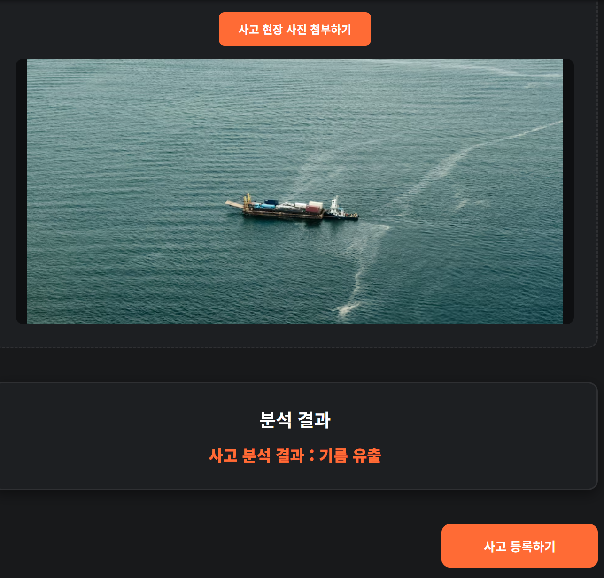
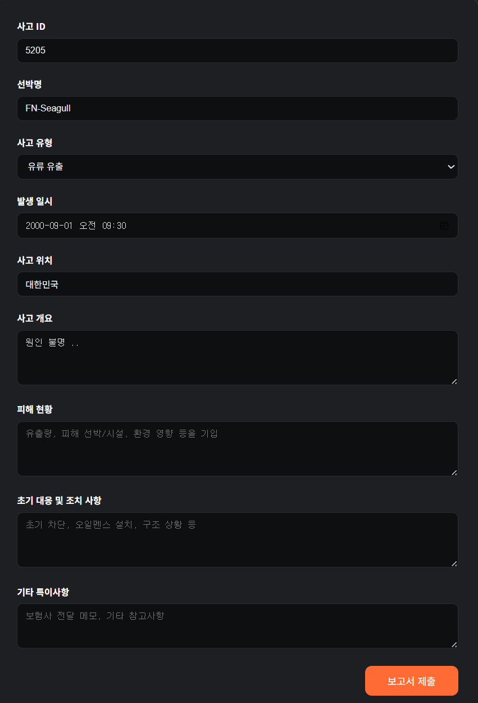

사고 유형 분석
사고 현장 사진을 업로드하면 AI가 자동으로 사고 유형을 분석해드립니다.
(현재는 시연용으로 결과가 임의로 표시됩니다.)


사고 현장을 기록하다
사고 현장 사진을 업로드하면 AI가 자동으로 사고 유형을 분석해드립니다.
(현재는 시연용으로 결과가 임의로 표시됩니다.)

모든 사고 데이터를 안전하게 저장하고, 검색·필터·보고서 생성을 한 화면에서 관리할 수 있습니다.
각 사고별 발생 시각, 유형, 유출물질, 보고서 생성 여부 등 핵심 정보가 직관적으로 표시됩니다.

AI가 사고 데이터를 분석해 클레임 보고서를 자동으로 생성합니다.
복잡한 서류 작업을 줄이고, 빠르고 정확한 사고 처리와 보험사 대응이 가능합니다.
